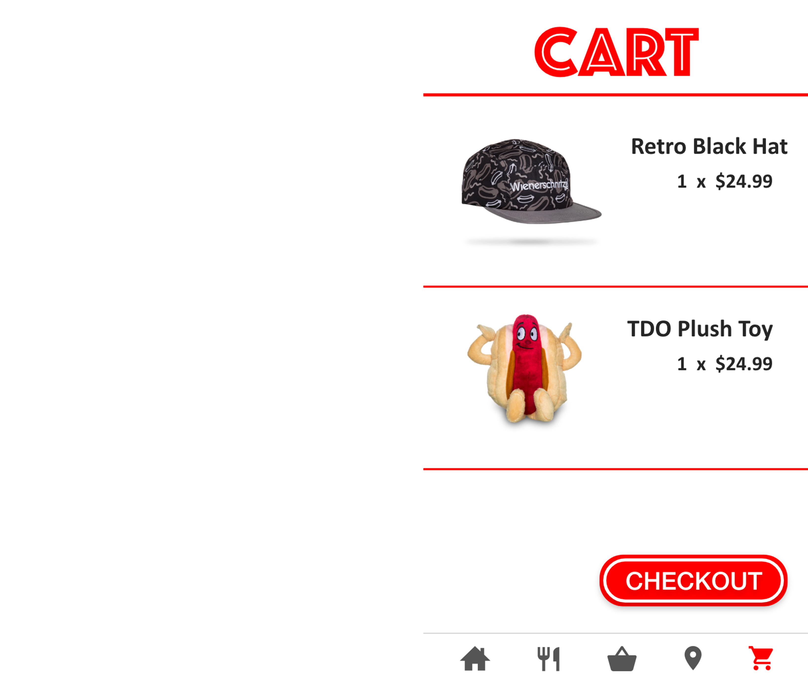
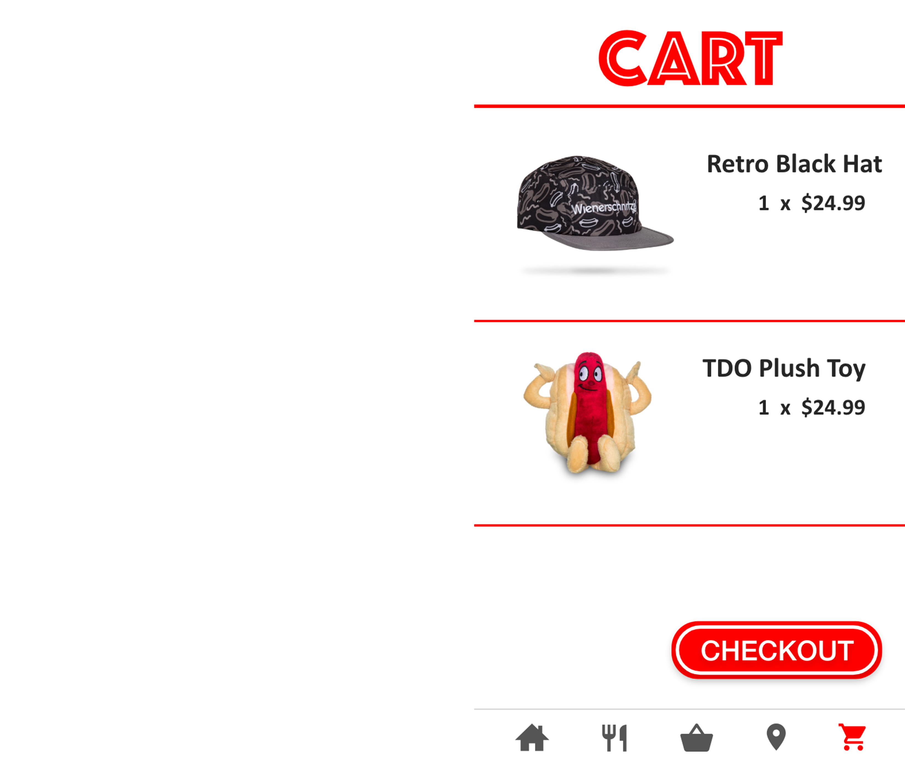

Professional Portfolio
Wienerschnitzel App
These are screens from an app I designed for the Wienerschnitzel food campaign through an on campus advertising group called ADS. This app design was included in a rebranding pitch to the client. The purpose of this app is to provide customers with a way to purchase goods from the company and to provide information about the Wienerschnitzel brand. Also, the goal was to improve the image of the company by giving a simple yet modern look and feel for this mobile app.
 
